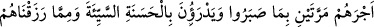
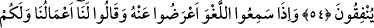
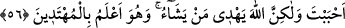
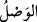

KÖTÜLÜĞÜ İYİLİKLE SAVMAK
51. Andolsun ki biz, düşünüp öğüt alsınlar diye, sözü (vahyi) birbiri ardınca
yetiştirmişizdir (aralıksız vahiylerimizi göndermişizdir).
52. Ondan (Kur an’dan) önce kendilerine kitap verdiklerimiz, ona da îman
ederler.
53. Onlara (Kur’an) okunduğu zaman: Ona îman ettik. Çünkü o Rabbimizden
gelmiş hakikattir. Esasen biz daha önce de müslüman idik, derler.
54. İşte onlara, sabretmelerinden ötürü, mükâfatları iki defa verilecektir. Bunlar
kötülüğü iyilikle savarlar, kendilerine verdiğimiz rızıktan da Allah rızâsı için
harcarlar.
55. Onlar, boş söz işittikleri zaman ondan yüz çevirirler ve: Bizim işlerimiz bize,
sizin işleriniz size. Size selâm olsun. Biz kendini bilmezleri (arkadaş edinmek)
istemeyiz, derler.
56. (Rasûlüm!) Sen sevdiğini hidâyete erdiremezsin; bilakis, Allah dilediğine
hidâyet verir ve hidâyete girecek olanları en iyi O bilir.
“Andolsun ki biz, düşünüp öğüt alsınlar” îman edip itâat etsinler “diye, sözü (vahyi)
birbiri ardınca yetiştirmişizdir (aralıksız vahiylerimizi göndermişizdir).”
“__WORD__, bir şeyi ulaştırma konusunda mübâlağa ifâde eder. “__WORD__ (vasl)”ın asıl
anlamı, iki şey arasındaki engeli kaldırmaktır.
Yani, Biz Kur’ân’ı, Kureyşlilere âyet âyet ve sûre sûre indirmek sûretiyle sözü onlara
ulaştırmağa devam ettik; ta ki hatırlatma kesilmesin, ard arda sürsün. Zira bu tebliğ
şekli, onları dîne dâvete daha uygundu.
Yahud da mânâsı şöyledir: Biz onlara nasîhatı ve yasak şeyleri anlatmaya devam ettik.
Önceki kuşakların ard arda helâk olma sebeplerini açıkladık. Nûh kavmî şu sebeple,